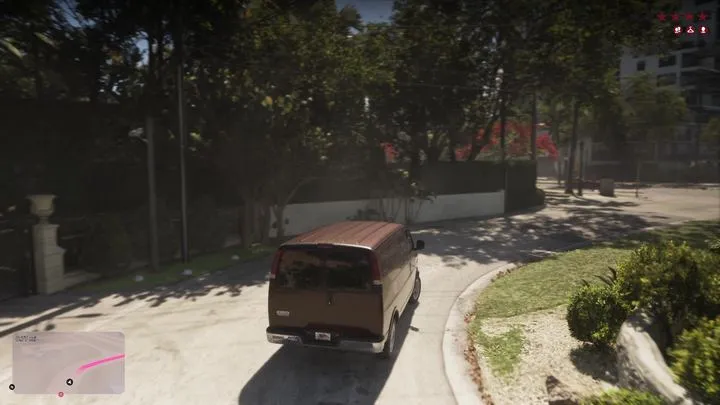
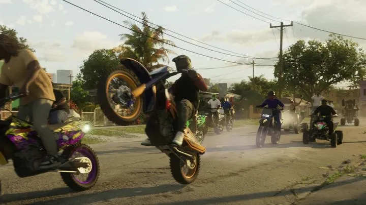

Машины, мотоциклы, лодки и авиация GTA 6, которые Rockstar уже показала.
Полного списка моделей Rockstar не публиковала — каталог вырастет после 19 ноября. Здесь — весь транспорт, который уже виден в трейлерах, «Расширенном показе» и на официальных скриншотах. Марку пишем, только если она видна в кадре.
Красный кабриолет Джейсона«Расширенный показ», 08:14
Джейсон садится в красный кабриолет со сложенной мягкой крышей и с 08:02 по 08:56 катается на нём по Вайс-Сити. Квадратные фары и угловатый кузов напоминают BMW 3-й серии E30.
Уличная автосходка в Вайс-Сити: розовое купе и зелёный седан на огромных хромированных дисках, вокруг толпа. Машины на больших колёсах — заметная часть автокультуры Майами.
Старый красный седан«Расширенный показ», 06:04
На этом седане на парковке в Амброзии Rockstar показала новый угон: над машиной подсказки «Slim Jim» — вскрыть замок тихо — и «Smash Window» — разбить стекло.

Бордовый фургон«Расширенный показ», 16:16
После налёта герои меняют машину: ту, на которой приехали, сжигают на парковке, а уходят на неприметном бордовом фургоне.
Полицейские машины«Расширенный показ», 14:08
В перестрелке на героев мчится тяжёлый полицейский внедорожник с кенгурятником и мигалкой, следом — другие машины полиции.
Двое с рюкзаками мчатся на спортивном мотоцикле по улице Вайс-Сити — эпизод идёт сразу после ограбления ювелирного магазина.

Кроссовые мотоциклы и квадроциклыТрейлер 1; «Расширенный показ», 18:34
Байкеры на кроссовых мотоциклах и квадроциклах едут по улице на заднем колесе. В «Расширенном показе» есть и мотокросс-гонка по грунту: круг 1/2, позиция 11 из 12.
Лодки и вода 6
Гоночные катераТрейлер 1
Катера проносятся по бирюзовой воде мимо сухогруза под портальными кранами порта Вайс-Сити.
Такси, автобусы и поездПревью журналистов (по GTABase, VICE)
По данным превью, по Леониде можно ездить на такси, автобусах и поезде. Кадров с ними Rockstar пока не показывала.
Кадры: Rockstar Games (трейлеры 1 и 2, «Расширенный показ», официальные скриншоты). Источник у каждой карточки указан под названием. Обновлено: 3 октября 2026.
Короткие ролики: GTA 6 и реальная жизнь
Каждый день — одно сравнение: кадр игры рядом с реальным фото. Подписывайтесь: